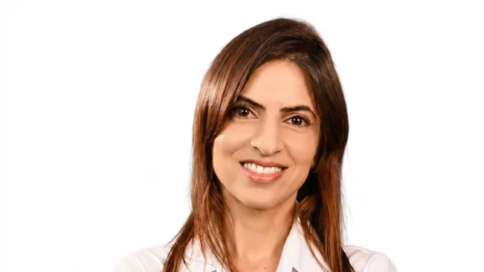
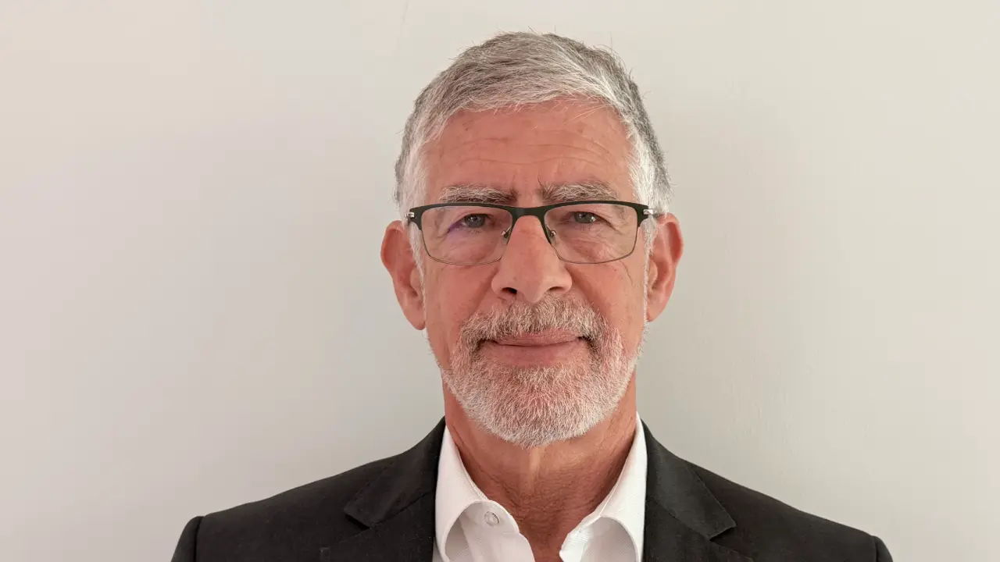
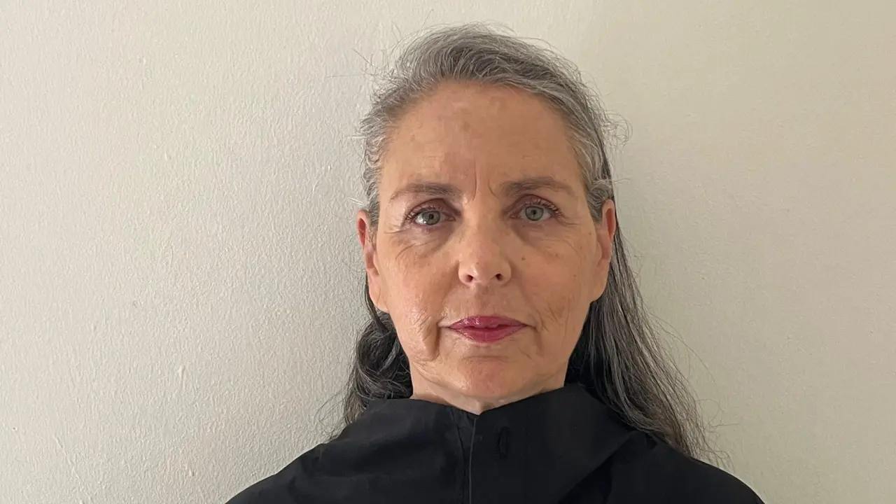
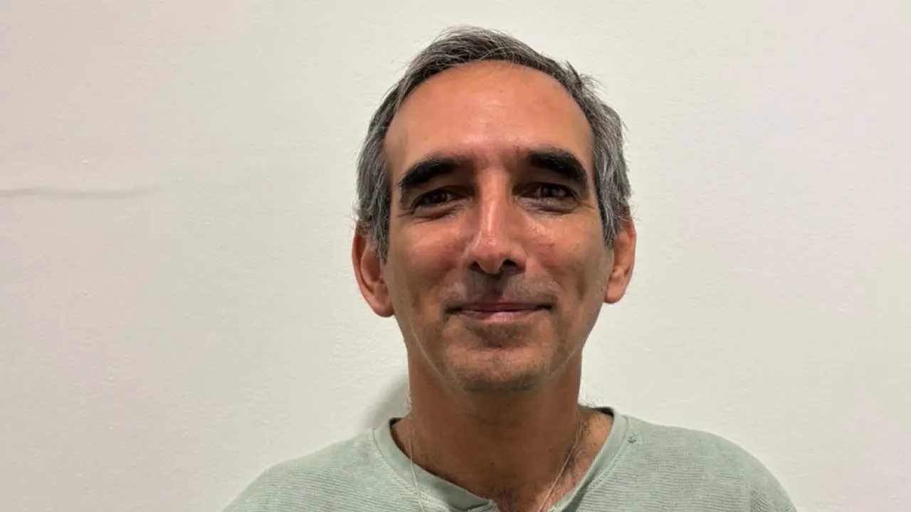
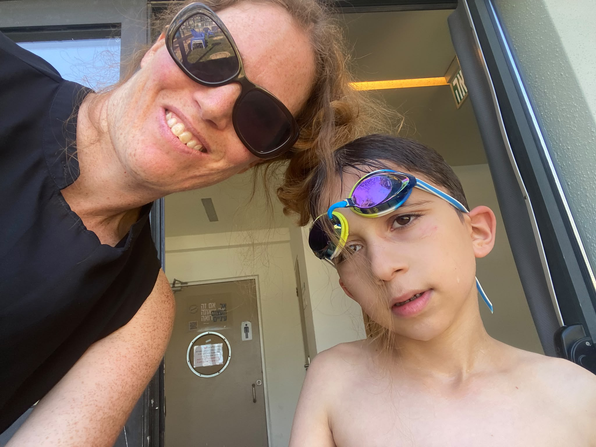

עכשיו בוחרות!
אלה האנשים שצריכים להוביל את הרשימה של הדמוקרטים






הבחירה שלנו באנשים האלה תהפוך את הדמוקרטים למפלגה שהיא לא רק איחוד של העבודה ומרצ, אלא היא המפלגה החדשה שתשקם את מחנה השמאל, תציע אלטרנטיבה ברורה ואמיתית של ליברליזם, שוויון, שותפות וחתירה לשלום ובטחון, מפלגה שתבנה את עצמה בצורה הכי מקצועית וכמה שיותר דמוקרטית עד להפיכתה למפלגת שלטון.
שאלות ותשובות עם עכשיו באות על הבחירה שלנו! 14.7.26
שלום לכולן!
אחרי שורה ארוכה של ראיונות למועמדי ומועמדות הדמוקרטים, ובעקבות המון שאלות שקיבלנו מכם לאורך הדרך, אנחנו בסשן קצר ומיוחד של שאלות עם מירי גרוס, נציגת עכשיו באות, על מבנה הרשימה והבחירה בפריימריז וגם לחשיפת ההחלטה שלנו במי נתמוך.
אחרי שורה ארוכה של ראיונות למועמדי ומועמדות הדמוקרטים, ובעקבות המון שאלות שקיבלנו מכם לאורך הדרך, אנחנו בסשן קצר ומיוחד של שאלות עם מירי גרוס, נציגת עכשיו באות, על מבנה הרשימה והבחירה בפריימריז וגם לחשיפת ההחלטה שלנו במי נתמוך.
היי מירי!
הי! קצת מוזר להיות בעמדת המרואיינת אחרי שבחודש האחרון הייתי בתפקיד עורכת השאלות למועמדים.ות מטעם עכשיו באות. תודה לכל מי שהשתתפה וכתבה לנו שאלות למועמדים!
אפשר אגב לקרוא את כל הראיונות שעשינו באתר: https://hagush.org.il/ask.html
נתחיל בשאלות שקיבלנו ביחס למנגנון הרשימה והבחירה ומי אנחנו ואז נעבור להסבר על הרשימה שבחרנו.
רונית שואלת: "איך אנו יודעים מי המועמדים שמתחרים על מקומות משוריינים - מר"צ, מיעוטים, התיישבות עובדת וכד'. אשמח לקבל בצורה מסודרת את השריונים (איזה מקום/ות משוריין לאיזה סקטור) ומי המועמדים לכל שריון".
אז ככה. לפי התקנון:
ל"מועמדי מרצ"- מובטחים מקומות 6 ו-8, -14.
ל"מועמדי מיעוטים"- מובטח ייצוג ב-4 מקומות מבין המקומות: 12,13, 18, 23, 27.
למועמד אחד בלבד מ"מועמדי המרחב הכפרי" - מובטח ייצוג באחד מאותם המקומות של מועמדי המיעוטים (12,13,18,23,27).
בהסכם הוגדרו התנאים למי שנחשב למועמד מרצ/המיעוטים/הכפרי. (אם שמעתם- היה איזה הליך משפטי בנוגע לתנאים שהוגדרו למועמדי מרצ).
אם מישהו מהמועמדים שזכאים להבטחת ייצוג נבחר למקום גבוה מהמקום המובטח - זה מבטל את הבטחת הייצוג.
ל"מועמדי מרצ"- מובטחים מקומות 6 ו-8, -14.
ל"מועמדי מיעוטים"- מובטח ייצוג ב-4 מקומות מבין המקומות: 12,13, 18, 23, 27.
למועמד אחד בלבד מ"מועמדי המרחב הכפרי" - מובטח ייצוג באחד מאותם המקומות של מועמדי המיעוטים (12,13,18,23,27).
בהסכם הוגדרו התנאים למי שנחשב למועמד מרצ/המיעוטים/הכפרי. (אם שמעתם- היה איזה הליך משפטי בנוגע לתנאים שהוגדרו למועמדי מרצ).
אם מישהו מהמועמדים שזכאים להבטחת ייצוג נבחר למקום גבוה מהמקום המובטח - זה מבטל את הבטחת הייצוג.
"מועמדי מרצ" הם:
גבי לסקי
אבי דבוש
מוסי רז
אעיד בדיר
נאור נרקיס
מיכל רוזין
יריב אופנהיימר
עלי סלאלחה
דימה שפירא
גבי לסקי
אבי דבוש
מוסי רז
אעיד בדיר
נאור נרקיס
מיכל רוזין
יריב אופנהיימר
עלי סלאלחה
דימה שפירא
מועמדי המיעוטים" הם:
אעיד בדיר
מאלכ בדר
גאלב סלאמנה
נדאל מסאלחה
אמיר חניפס
עלי סלאלחה
סומיה בשיר
אחסאן חלאילה
איהאב שליאן
אעיד בדיר
מאלכ בדר
גאלב סלאמנה
נדאל מסאלחה
אמיר חניפס
עלי סלאלחה
סומיה בשיר
אחסאן חלאילה
איהאב שליאן
"מועמדי המרחב הכפרי" הם:
ענבל וורטמן שהם
רם שפע
ערן עציון
אביתר באר
רתם סיון-הופמן
ענבר בזק
אבי דבוש
ענבל וורטמן שהם
רם שפע
ערן עציון
אביתר באר
רתם סיון-הופמן
ענבר בזק
אבי דבוש
עוד שאלה על נושא מרצ והבטחות הייצוג הגיעה מענת שרצתה להבין איך הבטחות הייצוג של מרצ משפיעות או מושפעות מהריצ'רצ' המגזרי.
התשובה היא שהבטחות הייצוג לא *מושפעות* מהריצ'רצ'- כלומר- המועמדים שקיבלו הכי הרבה קולות ייכנסו ולא משנה אם לפניהם היה גבר או אישה. למשל- אם מועמדת אישה ממרצ קיבלה הכי הרבה קולות מכל מועמדי מרצ האחרים היא תיכנס למקום ה-6 גם אם במקום 5 נבחרה אישה.
מצד שני- הבטחות הייצוג כן *משפיעות* על הריצ'רצ' - הריצ'רצ' המגדרי ממשיך בהתאמה למי שנבחר בהבטחת הייצוג. למשל- אם אותה מועמדת אישה ממרצ נכנסה למקום 6, אחריה יהיה חובה שייכנס מועמד גבר.
מקווה שההסבר ברור.
למי שרוצה לקבל את המידע המשפטי הכי מלא על הפריימריז- כאן מופיע התקנון עצמו: https://democrats.org.il/wp-content/uploads/2026/05/תקנון-הבחירות-280526-אחרי-ועדת-חוקה-נקי-1.pdf
מצד שני- הבטחות הייצוג כן *משפיעות* על הריצ'רצ' - הריצ'רצ' המגדרי ממשיך בהתאמה למי שנבחר בהבטחת הייצוג. למשל- אם אותה מועמדת אישה ממרצ נכנסה למקום 6, אחריה יהיה חובה שייכנס מועמד גבר.
מקווה שההסבר ברור.
למי שרוצה לקבל את המידע המשפטי הכי מלא על הפריימריז- כאן מופיע התקנון עצמו: https://democrats.org.il/wp-content/uploads/2026/05/תקנון-הבחירות-280526-אחרי-ועדת-חוקה-נקי-1.pdf
אני יכולה לחרוג לרגע מהשאלה ולומר משהו עקרוני על נושא הבטחת הייצוג?
את מסבירה ברור, אבל זה לא כזה פשוט🙂
בהחלט
אנחנו זמינות לכל שאלה נוספת על זה!
לגבי הנושא העקרוני של הבטחת הייצוג:
הבטחת ייצוג באופן כללי מעוותת את הדמוקרטיה הפנימית במפלגה והיא יכולה להיות מוצדקת אך ורק במקרים בהם יש צורך בהעדפה מתקנת. בדיוק כפי שהבטחת ייצוג במקומות עבודה מוצדקת רק במצבים כאלה.
אנחנו חושבת שהבטחות הייצוג המוצדקות הן הריצ'רצ' המגדרי והבטחת הייצוג למגזרי המיעוטים, ואולי גם פריפריה. אין הצדקה להבטחת ייצוג למועמדי מרצ ואין הצדקה להבטחת ייצוג למרחב הכפרי במתכונת הנוכחית.
אנחנו מקוות ומתכוונות לפעול כדי לבטל את הבטחות הייצוג האלה ולהחליף אותן בהבטחות ייצוג מכבדות ומשמעותיות לבני החברה הערבית והדרוזית בכל עשיריה.
מכיון שזה לא המצב כרגע, אנחנו ממליצות לכל מצביע שבוחר רשימה להתחשב בהבטחות הייצוג הקיימות בבחירת הרשימה, וזה מה שאנחנו עשינו.
הבטחת ייצוג באופן כללי מעוותת את הדמוקרטיה הפנימית במפלגה והיא יכולה להיות מוצדקת אך ורק במקרים בהם יש צורך בהעדפה מתקנת. בדיוק כפי שהבטחת ייצוג במקומות עבודה מוצדקת רק במצבים כאלה.
אנחנו חושבת שהבטחות הייצוג המוצדקות הן הריצ'רצ' המגדרי והבטחת הייצוג למגזרי המיעוטים, ואולי גם פריפריה. אין הצדקה להבטחת ייצוג למועמדי מרצ ואין הצדקה להבטחת ייצוג למרחב הכפרי במתכונת הנוכחית.
אנחנו מקוות ומתכוונות לפעול כדי לבטל את הבטחות הייצוג האלה ולהחליף אותן בהבטחות ייצוג מכבדות ומשמעותיות לבני החברה הערבית והדרוזית בכל עשיריה.
מכיון שזה לא המצב כרגע, אנחנו ממליצות לכל מצביע שבוחר רשימה להתחשב בהבטחות הייצוג הקיימות בבחירת הרשימה, וזה מה שאנחנו עשינו.
גלית שאלה: איך התקבלה ההחלטה שלכן?
מי המשתתפים? מה המנגנון?
מי המשתתפים? מה המנגנון?
זו תהיה תשובה ארוכה קצת. מחלקת אותה.
אנחנו קבוצה של פעילות שקמה מתוך המחאה. הבנו שכמו ששומרי הסף זקוקים לגב שלנו, גם מי שמייצג אותנו יזדקק לזה כדי לעמוד במשימות הקשות שצפויות בעתיד. הבנו שהמגרש הפוליטי הוא זירה בה מחליטים על העתיד וההווה כולנו. שזה עלינו לעודד ולתמוך באנשים איכותיים להצטרף לפוליטיקה כדי לעשות שם שינוי אמיתי. בקיצור הבנו שאנחנו חייבות להיות מעורבות במה שרובנו מעולם לא העלינו על דעתנו שנצטרך- בפעילות פוליטית- מפלגתית, כדי להיות מי שנותן את הגב הזה וכדי שהמחנה הפוליטי שלנו יעמוד על רגליו. וגם הבנו- שהרוח של המחאה צריכה לבוא לידי ביטוי במפלגה- ומבחינתנו מדובר ברוח של אקטיביזם, אחריות אישית וסולידריות.
בחרנו בדמוקרטים כבית הפוליטי שלנו לפני שנתיים, ורובינו נבחרו כצירי וועידה ומאז אנחנו מתנדבות בשביל הדמוקרטים במלא פעילויות שטח - חוגי בית, האתר של המפלגה, דוכנים ועוד.
בחרנו בדמוקרטים כבית הפוליטי שלנו לפני שנתיים, ורובינו נבחרו כצירי וועידה ומאז אנחנו מתנדבות בשביל הדמוקרטים במלא פעילויות שטח - חוגי בית, האתר של המפלגה, דוכנים ועוד.
לקראת הבחירות- גם הכלליות וגם הפריימריז החלטנו שזו חלק מלקיחת האחריות שלנו לעזור לייצר את הרשימה הכי הכי טובה שתייצג אותנו הכי טוב ותביא להישגים הכי טובים בבחירות. אנשים שמבינים היטב את האירוע שבו אנחנו נמצאות בשנים האחרונות ומסוגלים לעמוד במה שנדרש כדי לתקן.
אנחנו מאמינות שציבור מעורב ופעיל, שיש לו מידע, הוא תנאי לדמוקרטיה מתפקדת, זה נכון גם במפלגה וגם במדינה.
בחודשים האחרונים צירפנו אלינו פעילות נוספות, ובסופו של דבר היינו צוות לא קטן שעבד ממש קשה- במטרה להעלות כמה שיותר אנשים "דרגה" במעורבות פוליטית- מי שלא היה חבר מפלגה- פקדנו. מי שהיה חבר מפלגה אבל פחות פעיל- צירפנו לקבוצה שלנו. מי שהיה כבר בקבוצה שלנו- גייסנו כדי שיהפוך למתנדב ויפקוד בעצמו עוד אנשים. המטרה היא להגדיל כמה שיותר את הדמוקרטים ואת המעורבות של האנשים והקשר שלהם למפלגה הזאת, כדי לייצר תשתית טובה לקראת הבחירות הכלליות.
אנחנו מאמינות שציבור מעורב ופעיל, שיש לו מידע, הוא תנאי לדמוקרטיה מתפקדת, זה נכון גם במפלגה וגם במדינה.
בחודשים האחרונים צירפנו אלינו פעילות נוספות, ובסופו של דבר היינו צוות לא קטן שעבד ממש קשה- במטרה להעלות כמה שיותר אנשים "דרגה" במעורבות פוליטית- מי שלא היה חבר מפלגה- פקדנו. מי שהיה חבר מפלגה אבל פחות פעיל- צירפנו לקבוצה שלנו. מי שהיה כבר בקבוצה שלנו- גייסנו כדי שיהפוך למתנדב ויפקוד בעצמו עוד אנשים. המטרה היא להגדיל כמה שיותר את הדמוקרטים ואת המעורבות של האנשים והקשר שלהם למפלגה הזאת, כדי לייצר תשתית טובה לקראת הבחירות הכלליות.
חשוב לי להגיד - כולנו מתנדבות ובמקביל אימהות ועובדות. אני כרגע עם הקטן שלי בחוג שחייה שלו, אז מתנצלת אם יהיה קצת דיליי בהמשך.
סופרוומן
רגע, אני בחלק האחרון - לגבי התהליך שעשינו.
עשינו תהליך ממש ארוך של היכרות עם המועמדים.ות וגם הנגשה שלו לציבור. חודשים לפני שהמפלגה יצרה עמוד עם כל רשימת המועמדים, כבר ריכזנו את כל מי שהודיע על התמודדות באתר שלנו, והזמנו אותם לכתוב מידע אודותם. בהמשך פתחנו את קבוצת השאלות וראיינו מועמדות ומועמדים. במקביל, נפגשנו עם 27 מהמועמדים בפגישות אישיות, חלקן מאד ארוכות, כדי לקבל כמה שיותר מידע.
לאחר מכן הצוות שלנו, שנקבע שיהיה הצוות שיתן המלצה - קבוצה של 15 נשים ו-2 גברים, מהפעילות המרכזיות שלנו - נפגש באינטנסיביות, עיבד את כל המידע וערך דיון מסודר.
אני לא אגיד שלא היו חילוקי דעות. זה היה תהליך מורכב אבל אני חושבת שהגענו לתוצאה נכונה שעושה המון שכל ותסייע להצלחה של הדמוקרטים.
לאחר מכן הצוות שלנו, שנקבע שיהיה הצוות שיתן המלצה - קבוצה של 15 נשים ו-2 גברים, מהפעילות המרכזיות שלנו - נפגש באינטנסיביות, עיבד את כל המידע וערך דיון מסודר.
אני לא אגיד שלא היו חילוקי דעות. זה היה תהליך מורכב אבל אני חושבת שהגענו לתוצאה נכונה שעושה המון שכל ותסייע להצלחה של הדמוקרטים.
יכולה להעיד שבהחלט היו חילוקי דיעות. אבל חלק מהתהליך של הקבוצה, זה להתגבר עליהם.
יעל שואלת: "למה אתן לא מפרסמות מראש מי קובעות את הרשימה? ובכלל איך הרעיון שיש גוף כלשהו שמחליט כביכול או שלא כביכול בשביל א.נשים אחרים.ות מה להצביע שונה מהשיטות המפלגתיות הישנות של קבלני קולות? "
תודה יעל על השאלה הזאת!
אנחנו לא "גוף שמחליט" לא "קובעות" ובטח לא "קבלניות קולות". תיארתי קודם בדיוק מה עשינו ומי אנחנו. אנחנו פעילות. הגענו מהמחאה. הכרנו ברחובות. החלטנו לא להסתפק רק בהפגנות, אלא לעבוד גם כדי שיהיה לנו ייצוג פוליטי "ביום שאחרי". כי בסוף כל מה שעשינו במחאה יהיה חייב להיתרגם לכוח פוליטי. אם אחרי השנים האיומות האלה נקבל שוב ממשלת שינוי של שנה אחת שתיפול אז מה עשינו בזה?
כדי שדבר כזה לא יקרה שוב וכדי שיהיה כאן שינוי אמיתי ארוך טווח, המחאה צריכה לתרגם את עצמה לכוח פוליטי. וזה לא רק ברמת הנציגים והנציגות, שאנחנו שמחות שכל כך הרבה מהם עשו את המעבר הזה (וכולם לדמוקרטים כמובן!), אלא גם ברמת פעילי השטח - שזה אנחנו.
מאז אנחנו מתנדבות בשביל הדמוקרטים. אנחנו פוקדות אנשים לדמוקרטים, עומדות בדוכנים, תולות שלטים, עושות חוגי בית. מה שצריך.
הדנ"א שלנו הוא של מחאה- אנחנו מבינות איפה המדינה הזאת נמצאת ולמה היא הגיעה לאן שהיא הגיעה ואנחנו רוצות ייצוג בכנסת לאותו המאבק בדיוק.
כדי שדבר כזה לא יקרה שוב וכדי שיהיה כאן שינוי אמיתי ארוך טווח, המחאה צריכה לתרגם את עצמה לכוח פוליטי. וזה לא רק ברמת הנציגים והנציגות, שאנחנו שמחות שכל כך הרבה מהם עשו את המעבר הזה (וכולם לדמוקרטים כמובן!), אלא גם ברמת פעילי השטח - שזה אנחנו.
מאז אנחנו מתנדבות בשביל הדמוקרטים. אנחנו פוקדות אנשים לדמוקרטים, עומדות בדוכנים, תולות שלטים, עושות חוגי בית. מה שצריך.
הדנ"א שלנו הוא של מחאה- אנחנו מבינות איפה המדינה הזאת נמצאת ולמה היא הגיעה לאן שהיא הגיעה ואנחנו רוצות ייצוג בכנסת לאותו המאבק בדיוק.
אנחנו לא אומרות ולא קובעות לאף אחד למה להצביע בפריימריז כמו שאנחנו לא קובעות לאנשים למי להצביע בבחירות הכלליות. כל מה שאנחנו יכולות לעשות ומחובתנו לעשות בשני המקרים זה להציג ולשקף את האמת שלנו.
לכן, ניהלנו תהליך ארוך ושקוף מאד, שמטרתו היתה שאנחנו וכמה שיותר אנשים איתנו, יכירו היטב ככל שניתן את המועמדות.ים.
לכן, ניהלנו תהליך ארוך ושקוף מאד, שמטרתו היתה שאנחנו וכמה שיותר אנשים איתנו, יכירו היטב ככל שניתן את המועמדות.ים.
רגע! לא סיימתי
אחזק ואומר שאנחנו לא עובדות עבור מועמד כזה או אחר. אלא עבור רעיונות.
אנחנו *כן* חושבות שיש משמעות לעבודה יחד בקבוצה. זה משהו שלמדנו מהפעילות במחאה. הרי גם במחאה יצרנו קבוצות שעשינו בהן פעילות יחד וזה יצר מכפיל כוח, קהילה ואנרגיה. זה משהו שלדעתנו צריך להיות גם במפלגה. אנחנו חולקות ערכים משותפים ותפיסת עולם משותפת ובעיקר- רצון לייצר את אותו השינוי- להקים מחנה פוליטי נחוש, אידיאולוגי, של דמוקרטיה, שלום ושיוויון. אז עשינו יחד את התהליך, הגענו להחלטה איך צריכה לדעתנו להיות הרשימה. אנחנו רוצות מאד לתמוך באנשים שהחלטנו שצריכים להוביל את הדמוקרטים ולכן אנחנו רוצות לשכנע אתכם להצביע ככה כי זה בעינינו מה שייצר רשימה שתכניס לכנסת בסוף הרבה יותר מנדטים, כלומר - מועמדים טובים ומעולים נוספים שאנחנו ממש ממש אוהבות.
נעבור לחלק השני של השיחה הזאת- ונספר מה היה האופן שבו החלטנו, מה השיקולים שלנו בבחירת הרשימה ובמי בחרנו בסופו של דבר.
יאללה
רגע לפני
יש בקשה מהקהל לתמונה, כמו שבקשנו מכל המועמדים. שקיפות עד הסוף
אוי ואבוי…
כבר סיפרת לנו שאת בבריכה...

אליפות!!!
מה היתה השאלה הקודמת?
אופן הבחירה שלנו
אז כמו שכתבתי קודם- החלטנו שאנחנו לוקחות אחריות. כלומר- מה שעמד לנגד עיננו זה הרצון לייצר את הרשימה הכי טובה של האנשים הכי הכי מתאימים שמייצגים את הערכים שלנו ושאנחנו מאמינות ביכולת שלהם להוביל את השינוי שאנחנו רוצות לראות.
לקחנו בחשבון שאנחנו פועלות בתוך מערכת של אילוצים- יש רק 8 שמות שכל אחת מאיתנו יכולה לשים, יש הבטחות ייצוג למרצ, ויש ריצ'רצ' מגדרי.
מה שעמד לנגד עיננו היה עיקרון מאד פשוט- אם אנחנו רוצות לקחת אחריות אמיתית- אנחנו צריכות לחשוב הכי ישר והכי ברור- מי 8 האנשים שהיינו רוצות לראות מובילים ומובילות את הרשימה יחד עם יאיר גולן וככה להצביע. כשחושבים על זה ככה זה נעשה (יחסית) פשוט.
במקביל- צריך לזכור שיש הרבה יותר מ-8 מקומות ריאלים וגם לשמחתנו, הרבה יותר מועמדות ומועמדים ממש מצויינים שיוכלו להיכנס אליהם. זה מעולה ומשמח ואנחנו בטוחות שבעבודה נכונה, ובטח לטווח הארוך- חלק גדול מהם.ן יהפכו לחברי כנסת.
לקחנו בחשבון שאנחנו פועלות בתוך מערכת של אילוצים- יש רק 8 שמות שכל אחת מאיתנו יכולה לשים, יש הבטחות ייצוג למרצ, ויש ריצ'רצ' מגדרי.
מה שעמד לנגד עיננו היה עיקרון מאד פשוט- אם אנחנו רוצות לקחת אחריות אמיתית- אנחנו צריכות לחשוב הכי ישר והכי ברור- מי 8 האנשים שהיינו רוצות לראות מובילים ומובילות את הרשימה יחד עם יאיר גולן וככה להצביע. כשחושבים על זה ככה זה נעשה (יחסית) פשוט.
במקביל- צריך לזכור שיש הרבה יותר מ-8 מקומות ריאלים וגם לשמחתנו, הרבה יותר מועמדות ומועמדים ממש מצויינים שיוכלו להיכנס אליהם. זה מעולה ומשמח ואנחנו בטוחות שבעבודה נכונה, ובטח לטווח הארוך- חלק גדול מהם.ן יהפכו לחברי כנסת.
אין ספק שההתפקדות המטורפת בימים האחרונים העלתה קצת צבע ללחיים ובהחלט נותן מקום לקוות ליותר מעשרת המנדטים שהסוקרים נותנים.
ממש. מאד מרגש
אז... מוכנה לגלות במי בסוף בחרנו לתמוך? (תופים תופים תופים :-))
המסקנה שהגענו אליה היא, שאחרי יאיר גולן, רשימה מעולה ומוצלחת שנהיה גאות בה ונעמוד מאחוריה, תהיה הרשימה הזאת:
*נעמה לזימי*
*גלעד קריב*
*אפרת רייטן*
*משה רדמן*
*גבי לסקי* - המקום של מרצ
*נמרוד שפר*
*אבי דבוש* - המקום של מרצ
*נאוה רוזוליו*
לכן- *זו תהיה ההצבעה שלנו*.
*נעמה לזימי*
*גלעד קריב*
*אפרת רייטן*
*משה רדמן*
*גבי לסקי* - המקום של מרצ
*נמרוד שפר*
*אבי דבוש* - המקום של מרצ
*נאוה רוזוליו*
לכן- *זו תהיה ההצבעה שלנו*.
זה לא היה קל להגיע להחלטה הזאת כי באמת שיש עוד מועמדים ומועמדות פשוט מצויינים שאנחנו מעריכות מאוד, ושלשמחתנו ייכנסו גם הם, כי יש עוד מקומות.
אנחנו חושבות שזו רשימה מצויינת שתוכל להביא את הדמוקרטים להצלחה ולעמוד באתגרים הקשים שעוד צפויים לנו. לכן נצביע עבורה. חשוב לנו לציין שיש עוד מתמודדות ומתמודדים נוספים ומעולים שאנחנו יודעות שיהפכו להיות חברי וחברות כנסת מצויינים, חלקם כבר הפעם וחלקם בפעם הבאה, כשהמפלגה תגיע לפוטנציאל האמיתי שלה.
אנחנו חושבות שזו רשימה מצויינת שתוכל להביא את הדמוקרטים להצלחה ולעמוד באתגרים הקשים שעוד צפויים לנו. לכן נצביע עבורה. חשוב לנו לציין שיש עוד מתמודדות ומתמודדים נוספים ומעולים שאנחנו יודעות שיהפכו להיות חברי וחברות כנסת מצויינים, חלקם כבר הפעם וחלקם בפעם הבאה, כשהמפלגה תגיע לפוטנציאל האמיתי שלה.
יש כאן איתנו בקבוצה מועמדות ומועמדים ועוזרים שלהם שמאוכזבים וזה מובן. כבר נתייחס גם לזה.
כמו שמירי כתבה ואפשר לראות מהאימוג'ים, לא כולן.ם מרוצות.ים וזה בסדר. ככלל, המושלם של עכשיו באות! זה 80%. מירי, תסבירי קצת על העיקרון של ה-80%.
כמו שכתבתי קודם - אנחנו עובדות בקבוצה. זה ברור שלא נגיע ל100 אחוז הסכמות. גם הרשימה לכנסת
לא תהיה ה100 אחוז שלנו ואנחנו נתמוך בה במיליון אחוז. כי זו המפלגה שלנו ואנחנו כאן לטווח ארוך.
לא תהיה ה100 אחוז שלנו ואנחנו נתמוך בה במיליון אחוז. כי זו המפלגה שלנו ואנחנו כאן לטווח ארוך.
🎯
למה דווקא האנשים והנשים האלה?
החלטנו לבחור בשלושת חברי הכנסת המכהנים, *נעמה לזימי, גלעד קריב ואפרת רייטן*. בשלוש וחצי השנים האיומות האחרונות שלושתם עמדו לצידנו באומץ, בגבורה, ותוך שהם מקבלים איומים על החיים שלהם. שלושתם פעלו ללא הפסקה בכנסת וברחובות ונלחמו בשבילנו. אין שום שאלה בכלל מבחינתנו ששלושתם צריכים להיות בראש הרשימה ולהוביל את הדמוקרטים יחד עם יאיר ולחנוך את חברי הכנסת הרבים החדשים.
הבחירה *בנאוה רוזוליו* היתה עבורינו מובנת מאליה- מדובר באישה שעשתה ימים כלילות במחאה, שילמה מחירים אישיים כבדים ומבלה בשנתיים האחרונות גם בוועדות הכנסת. אנחנו יודעות שהיא תמשיך לעבוד בשבילנו בנחישות, בחריצות ובחוכמה.
הבחירה בין הגברים היתה קשה מאד. יש מועמדים פשוט מצויינים. רבים מהם נלחמו לצידנו ברחובות בשנים האלה. אחרי התלבטות ודיונים בחרנו *במשה רדמן*, שאנחנו מכירות את היכולות שלו מהמחאה- בחור מבריק, נחוש ואידיאולוג. *ובנמרוד שפר*- שהפגין איתנו בקיסריה ובכל הארץ, ומביא איתו קול ברור מאד וקוהרנטי של הסדרים מדיניים ויכולת לתווך אותם לציבור הישראלי.
ולבסוף, כמו שכתבתי, מכיון שיש הבטחת ייצוג של שני מקומות למרצ בשמיניה הראשונה - זו אחריות שלנו לדאוג לכך שיהיו שם את האנשים הכי טובים מבין מועמדי מרצ.
הכישלון האיום של מרצ בבחירות האחרונות הוא חלק מהסיבה לאסון הממשלה הנוכחית. אנחנו מחוייבות לבחור באנשים שמבינים את האחריות של המפלגה שלהם לכך ולתיקון הנדרש מכל בחינה.
לכן- בחרנו בשני מועמדים מצויינים שהיו לצידנו ובשנים האחרונות ופעלו ללא לאות בדיוק בשביל זה. *גבי לסקי* שאין צורך להסביר כמה תמכה בנו בשנים האחרונות כחלק מהפעילות שלה במערך עוטף עצורים, *ואבי דבוש*, שהיה חלק בלתי נפרד ממחאת הדרום. שניהם מבינים היטב את הצורך הנדרש בשינוי דפוסי הפעולה הכושלים מהעבר ומסוגלים להוביל את התיקון והשיקום.
הכישלון האיום של מרצ בבחירות האחרונות הוא חלק מהסיבה לאסון הממשלה הנוכחית. אנחנו מחוייבות לבחור באנשים שמבינים את האחריות של המפלגה שלהם לכך ולתיקון הנדרש מכל בחינה.
לכן- בחרנו בשני מועמדים מצויינים שהיו לצידנו ובשנים האחרונות ופעלו ללא לאות בדיוק בשביל זה. *גבי לסקי* שאין צורך להסביר כמה תמכה בנו בשנים האחרונות כחלק מהפעילות שלה במערך עוטף עצורים, *ואבי דבוש*, שהיה חלק בלתי נפרד ממחאת הדרום. שניהם מבינים היטב את הצורך הנדרש בשינוי דפוסי הפעולה הכושלים מהעבר ומסוגלים להוביל את התיקון והשיקום.
אני נשאלת שאלות גם בפרטי. מבטיחה להתייחס תכף.
איך יכול להיות שלא המלצנו להצביע למועמד.ת ערבי? הרי כולנו כל כך תומכות בשותפות יהודית-ערבית וחלקנו פעילות מאד בתחום בתוך הדמוקרטים.
בדיוק קיבלתי המון שאלות כאלה בפרטי. הנה התשובה
התשובה היא שלצערנו, המפלגה לא מצאה לנכון להבטיח ייצוג למועמד ערבי בעשיריה הראשונה וכן מצאה לנכון להבטיח ייצוג למועמדי מרצ במסגרת הסכם האיחוד עם מרצ. זה משהו שצריך יהיה לשנות לקראת הפריימריז הבאים ואנחנו מתכוונות לפעול כדי שזה יקרה.
מצד שני- אנחנו חושבות שמקום 12 שבו כן יש הבטחת ייצוג יהפוך להיות ריאלי כשתהיה נבחרת מעולה בעשיריה הראשונה ואנחנו חושבות שמחובתנו להצביע באופן שיהפוך את העשיריה הראשונה לכזאת.
זו הדרך הכי טובה כרגע להבטיח ייצוג למגזר הערבי ברשימה של הדמוקרטים לכנסת. זה כן היה נושא שיצר אצלנו קושי אמיתי מאד וראינו גם כמה קשה לנו להבין את המורכבות של שילוב החברה הערבית בדמוקרטים.
זה יתוקן בפעם הבאה. אני ממש מקווה.
מצד שני- אנחנו חושבות שמקום 12 שבו כן יש הבטחת ייצוג יהפוך להיות ריאלי כשתהיה נבחרת מעולה בעשיריה הראשונה ואנחנו חושבות שמחובתנו להצביע באופן שיהפוך את העשיריה הראשונה לכזאת.
זו הדרך הכי טובה כרגע להבטיח ייצוג למגזר הערבי ברשימה של הדמוקרטים לכנסת. זה כן היה נושא שיצר אצלנו קושי אמיתי מאד וראינו גם כמה קשה לנו להבין את המורכבות של שילוב החברה הערבית בדמוקרטים.
זה יתוקן בפעם הבאה. אני ממש מקווה.
מה לגבי המועמדים.ות האחרים? איך יכול להיות שלא בחרתם מועמדים ומועמדות ממש מצויינות אחרות?
יש באמת מועמדים ומועמדות מצויינים בהיקף חסר תקדים, חברות וחברים ושותפים אמיתיים לדרך. אנחנו חושבות שחלק גדול מהם ייכנסו לכנסת אם נעשה עבודה טובה ונביא לדמוקרטים את ה-15-20 מנדטים שצריך להביא כבר בבחירות האלה.
אני רוצה לומר כאן שהזהירו אותנו שאם נמליץ על רשימה זה יעורר אנטגוניזם או כעס כלפינו מצד מי שלא נמצא בה. אנחנו יודעות בבירור שזה לא המצב. מדובר בא.נשים ברמה מאד גבוהה, חכמים וערכיים, וכולם.ן מבינים את האילוצים. כולם וכולן איתנו לטווח ארוך ולמטרה משותפת. כולנו נמשיך לעבוד יחד אחרי הפריימריז האלה כדי להציל את המדינה. אין לנו שום ספק בכך.
אני רוצה לומר כאן שהזהירו אותנו שאם נמליץ על רשימה זה יעורר אנטגוניזם או כעס כלפינו מצד מי שלא נמצא בה. אנחנו יודעות בבירור שזה לא המצב. מדובר בא.נשים ברמה מאד גבוהה, חכמים וערכיים, וכולם.ן מבינים את האילוצים. כולם וכולן איתנו לטווח ארוך ולמטרה משותפת. כולנו נמשיך לעבוד יחד אחרי הפריימריז האלה כדי להציל את המדינה. אין לנו שום ספק בכך.
ספציפית, קבלנו שאלה על יאיא. איך יאיא פינק לא ברשימה ?האם היותו איש שטח ומחאה לא מקדם בדיוק את הדברים שעלו פה? מעבר לערכים אחרים שמביא איתו?
זו שאלה טובה. יאיא חבר אישי. לא רק שלי. אנחנו מעריכות אותו מאד מאד. קיבלנו החלטה להגיד בדיוק 8 ולקבל החלטה כקבוצה. מגלה כאן שנשבר לחלקנו הלב מכך שהוא לא ברשימה שלנו, אבל אנחנו בטוחות שהוא כן ייכנס לכנסת ויהיה ח״כ וגם שר מעולה.
אני מקבלת המון שאלות גם בפרטי. אני אנסה להתייחס לכולם אחד אחד בערב.
שואלת נוספת מעכשיו, שואלת האם נשקלו באותו משקל גם מועמדים שלא עלו לראיונות / שלא הצלחתן להיפגש איתן?
בוודאי. שקלנו ולמדנו על כולם. לצערי לא הספקנו לראיין את כולן וכולם בקבוצה שלנו. מפאת חוסר זמן ומשאבים. הכרנו גם בפגישות אישיות 27 מהמועמדים והמועמדות.
אנחנו באמת חושבות
שהבחירה הזאת שלנו באנשים האלה, שאליהם יצטרפו עוד אנשים ונשים מצויינים, תהפוך את הדמוקרטים למפלגה שהיא לא רק איחוד של העבודה ומרצ, אלא היא המפלגה החדשה שתשקם את מחנה השמאל, תציע אלטרנטיבה ברורה ואמיתית של ליברליזם, שוויון, שותפות וחתירה לשלום ובטחון, מפלגה שתבנה את עצמה בצורה הכי מקצועית וכמה שיותר דמוקרטית עד להפיכתה למפלגת שלטון. זה השלב הראשון.
שהבחירה הזאת שלנו באנשים האלה, שאליהם יצטרפו עוד אנשים ונשים מצויינים, תהפוך את הדמוקרטים למפלגה שהיא לא רק איחוד של העבודה ומרצ, אלא היא המפלגה החדשה שתשקם את מחנה השמאל, תציע אלטרנטיבה ברורה ואמיתית של ליברליזם, שוויון, שותפות וחתירה לשלום ובטחון, מפלגה שתבנה את עצמה בצורה הכי מקצועית וכמה שיותר דמוקרטית עד להפיכתה למפלגת שלטון. זה השלב הראשון.
מתוך הרשימה הזו, במי עכשיו באות! רואות כנושא הדגל בתחום הפרדת הדת והמדינה?
העמדה של המפלגה בעניין ברורה ואני מאמינה שכל הנבחרים יקדמו את הנושא. גלעד קריב הוא סמל ליהדות שהיא שיוויונית, ערכית, מקדשת חיים.
מזכירה לכל השואלים והשואלןת בפרטי - ההצבעה היא רק ל8. בפעם הבאה נוכל להצביע ל15 כי הפוטנציאל יהיה כבר 30 מנדטים.
רווית שמעריצה את עכשיו באות (תודה 🙂) רוצה לדעת יותר על איך נבחרו הבוחרות.
רק אומרת - אני לא הזכרתי כאן את כל השמות שמעלים מולי בפרטי. יש שם כמה מדהימים וגם חברים. אנחנו חושבות שכבר הפעם יש פוטנציאל ל15 מנדטים לפחות וייכנסו רבים מהם. כן בחרנו רשימה שבעיננו היא הטובה והנכונה ביותר.
לגבי השאלה של רוית - כולנו מתנדבות, עושות את זה כבר שנתיים +. לקראת ההחלטה הרחבנו את הצוות כדי שיהיו בו פעילים ובעיקר פעילות נוספות שלנו. כמו במחאה - מי שעושה משפיע.
אני מזמינה את כולם וכולן כאן להצטרף אלינו ולהיות חלק מזה.
אני מזמינה את כולם וכולן כאן להצטרף אלינו ולהיות חלק מזה.
רגע - מעירים לי בפרטי שהתשובה לשאלה הקודמת לא היתה ברורה. אז מחדדת
הצוות שקבע את הרשימה הוא צוות של (בעיקר) נשים שמתנדבות איתנו ב״מיזם״ הזה כבר שנתיים. הצענו לקראת הפריימריז להגדיל אותו וצירפנו אליו עוד פעילות שפקדו וצירפו אנשים. ככה הגענו לצוות שעשה את הבחירה.
אני שוב מזמינה את כל מי שרוצה לקחת חלק בפעילות שלנו להצטרף אלינו.
אני שוב מזמינה את כל מי שרוצה לקחת חלק בפעילות שלנו להצטרף אלינו.
ויש פה שאלה לגבי היום שאחרי. נשאלנו, מה התוכניות של עכשיו באות ליום שאחרי הפריימריז?
אנחנו מתכננות לעבוד הכי קשה שיש כדי להביא את הדמוקרטים למחאה ואת המחאה לדמוקרטים. כדי שכל איש ואישה שיצאו עם דגל לרחובות בשנים האלה יבינו שזו ההצבעה הכי נכונה למדינה. לנו זה ממש ממש ברור ואנחנו נעבוד הכי קשה כדי שזה יקרה וכדי שנגיע למינימום 15 מנדטים.
ומשם - להפוך אותה למפלגת שלטון. זו הדרך היחידה להציל את המדינה.
מילות סיכום של עכשיו באות?
אנחנו מקוות שכמה שיותר יאמינו בדרך שעשינו ויבחרו איתנו.
זו לדעתנו הדרך להבטיח נבחרת מנצחת לדמוקרטים, וזה השלב הראשון והחשוב מאד של הפיכת הדמוקרטים למפלגת שלטון - כבר במערכת הבחירות הבאה.
אנחנו זמינות לשאלות/תהיות נוספות והכי חשוב- מוזמנות להצטרף אלינו. הטופס של השאלות שבאתר ממשיך להיות פעיל ואנחנו מבטיחות לחזור בפרטי לכל מי שיכתוב לנו בו שאלה.
כאן הלינק לטופס השאלות: https://hagush.org.il/ask.html
כאן הלינק להצטרפות לקבוצת הוואטסאפ שלנו: https://ltl.me/vyj7n
*אנחנו מבטיחות שלא נוותר ולא נפסיק להפגין, לעבוד ולהילחם- עד שישראל תהיה דמוקרטיה*.
זה הבית שלנו ואלה החיים שלנו ושל הילדים שלנו.
*בשביל זה באנו, ובשביל זה עכשיו באות!*
זו לדעתנו הדרך להבטיח נבחרת מנצחת לדמוקרטים, וזה השלב הראשון והחשוב מאד של הפיכת הדמוקרטים למפלגת שלטון - כבר במערכת הבחירות הבאה.
אנחנו זמינות לשאלות/תהיות נוספות והכי חשוב- מוזמנות להצטרף אלינו. הטופס של השאלות שבאתר ממשיך להיות פעיל ואנחנו מבטיחות לחזור בפרטי לכל מי שיכתוב לנו בו שאלה.
כאן הלינק לטופס השאלות: https://hagush.org.il/ask.html
כאן הלינק להצטרפות לקבוצת הוואטסאפ שלנו: https://ltl.me/vyj7n
*אנחנו מבטיחות שלא נוותר ולא נפסיק להפגין, לעבוד ולהילחם- עד שישראל תהיה דמוקרטיה*.
זה הבית שלנו ואלה החיים שלנו ושל הילדים שלנו.
*בשביל זה באנו, ובשביל זה עכשיו באות!*
תודה רבה מירי, תודה רבה לכולכם שהשתתפתם ושאלתם.
אנחנו נמשיך לעבוד במרץ כמו שמירי אמרה עד הפריימריז, עד הניצחון בבחירות ועד שיהיה פה טוב יותר🇮🇱
אנחנו נמשיך לעבוד במרץ כמו שמירי אמרה עד הפריימריז, עד הניצחון בבחירות ועד שיהיה פה טוב יותר🇮🇱
אפשר מילה אחרונה?
ברורררר
הקבוצה הזאת תישאר פעילה בזמנים שונים גם אחרי הפריימריז- המטרה שלנו היתה להגביר מעורבות ולתת גב לנבחרים. כדי שלא יקרה שוב ממשלת שינוי 2 של שנה אחת. אנחנו נשמור על קשר עם הנבחרים שלנו והם איתנו. ניתן להם גב והם ייצגו אותנו.
ככה עושות את זה.
ותודה רבה רבה לכל השותפות שלי לדרך ולכל המעגלים הרחבים של המתנדבות והמתנדבים המדהימים.
ותודה רבה רבה לכל השותפות שלי לדרך ולכל המעגלים הרחבים של המתנדבות והמתנדבים המדהימים.